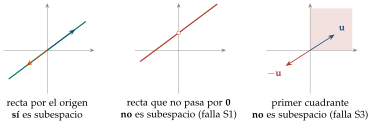
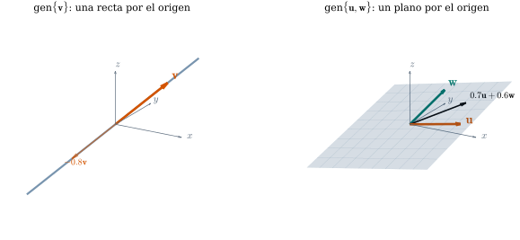
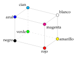
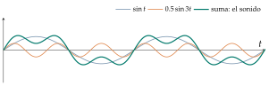

Espacios vectoriales y subespacios
- reconocer que polinomios, matrices, funciones y señales se comportan como vectores;
- entender la definición de espacio vectorial a partir de sus reglas;
- decidir si un conjunto es un subespacio usando tres comprobaciones;
- calcular el espacio generado por un conjunto de vectores y describirlo con ecuaciones;
- reconocer el conjunto solución de un sistema homogéneo como un subespacio.
Hasta ahora hemos sumado flechas, listas de números y matrices, y siempre aparecieron las mismas reglas. Los matemáticos se dieron cuenta de que lo importante no es qué son los objetos, sino cómo se suman y se multiplican por números. A cualquier colección de objetos que siga esas reglas la llamaremos espacio vectorial, y todo lo que aprendamos sobre vectores de \(\R^n\) valdrá automáticamente para ella.
6.1 Conceptos
6.1.1 La idea: todo lo que se puede sumar y escalar
Observa estas tres operaciones, aparentemente distintas:
En los tres casos se suma “componente a componente” y se cumple lo mismo: el orden no importa, hay un cero, cada objeto tiene un opuesto, etc. El polinomio \(a+bx+cx^2\) se comporta igual que el vector \((a,b,c)\), y la matriz de \(2\times2\) igual que un vector de \(\R^4\).
6.1.2 Definición de espacio vectorial
Un espacio vectorial (real) es un conjunto \(V\) de objetos, llamados vectores, con una suma \(\vu+\vv\) y un producto por escalares \(c\vu\) (\(c\in\R\)), tales que para todos \(\vu,\vv,\vw\in V\) y \(c,d\in\R\):
| 1. | \(\vu+\vv\) está en \(V\) (cerradura) | 6. | \(c\vu\) está en \(V\) (cerradura) |
| 2. | \(\vu+\vv=\vv+\vu\) | 7. | \(c(\vu+\vv)=c\vu+c\vv\) |
| 3. | \((\vu+\vv)+\vw=\vu+(\vv+\vw)\) | 8. | \((c+d)\vu=c\vu+d\vu\) |
| 4. | existe \(\cero\in V\) con \(\vu+\cero=\vu\) | 9. | \(c(d\vu)=(cd)\vu\) |
| 5. | cada \(\vu\) tiene un opuesto \(-\vu\) | 10. | \(1\vu=\vu\) |
No hace falta memorizar la lista: son las mismas reglas de los números reales del Capítulo 1 (Propiedad 1.2) y de los vectores del Capítulo 3.
Los ejemplos más importantes
| Espacio | Sus vectores | Su “cero” |
|---|---|---|
| \(\R^n\) | listas \((x_1,\dots,x_n)\) | \((0,\dots,0)\) |
| \(M_{m\times n}\) | matrices de \(m\times n\) | la matriz cero \(O\) |
| \(P_n\) | polinomios \(a_0+a_1x+\cdots+a_nx^n\) de grado \(\le n\) | el polinomio \(0\) |
| \(F(\R)\) | funciones \(f:\R\to\R\) (por ejemplo, señales de sonido) | la función \(f(x)=0\) |
El conjunto de los vectores de \(\R^2\) con ambas componentes positivas no es espacio vectorial: \((1,2)\) está en él, pero \((-1)\cdot(1,2)=(-1,-2)\) no. Tampoco lo son los polinomios de grado exactamente 2: \((x^2+1)+(-x^2)=1\) tiene grado 0.
6.1.3 Subespacios
Muchas veces trabajamos dentro de una parte de un espacio más grande: una recta o un plano dentro de \(\R^3\), las matrices simétricas dentro de todas las matrices, etc.
Un subconjunto \(W\) de un espacio vectorial \(V\) es un subespacio si es, él mismo, un espacio vectorial con las operaciones de \(V\). Basta comprobar tres cosas:
- el vector cero de \(V\) está en \(W\);
- si \(\vu,\vv\in W\), entonces \(\vu+\vv\in W\) (cerrado bajo la suma);
- si \(\vu\in W\) y \(c\in\R\), entonces \(c\vu\in W\) (cerrado bajo el producto por escalar).

Los subespacios de \(\R^3\) son: el origen, las rectas por el origen, los planos por el origen y todo \(\R^3\). Una recta o un plano que no pasa por el origen nunca es subespacio.
6.1.4 Espacio generado
El espacio generado por los vectores \(\vv_1,\dots,\vv_k\) es el conjunto de todas sus combinaciones lineales:
Siempre es un subespacio. Si \(\gen\{\vv_1,\dots,\vv_k\}=V\), decimos que los vectores generan \(V\) (o que forman un conjunto generador).

Por ejemplo, \(\vect e_1=(1,0,0)\), \(\vect e_2=(0,1,0)\), \(\vect e_3=(0,0,1)\) generan \(\R^3\), porque \((x,y,z)=x\vect e_1+y\vect e_2+z\vect e_3\). Del mismo modo, \(1,x,x^2\) generan \(P_2\).
\(\vw\in\gen\{\vv_1,\dots,\vv_k\}\) si y solo si el sistema con matriz aumentada \(\big(\vv_1\ \cdots\ \vv_k\ |\ \vw\big)\) (los vectores como columnas) tiene solución.
6.1.5 El espacio nulo: soluciones de un sistema homogéneo
Si \(A\) es de \(m\times n\), el conjunto \(\nul(A)=\{\vx\in\R^n: A\vx=\cero\}\), llamado espacio nulo de \(A\), es un subespacio de \(\R^n\).
En efecto: \(A\cero=\cero\); si \(A\vu=\cero\) y \(A\vv=\cero\), entonces \(A(\vu+\vv)=\cero+\cero=\cero\) y \(A(c\vu)=cA\vu=\cero\). En cambio, las soluciones de un sistema no homogéneo \(A\vx=\vb\) con \(\vb\neq\cero\) nunca forman un subespacio, porque \(\cero\) no es solución.
¿Es el plano \(x+y+z=1\) un subespacio de \(\R^3\)? ¿Y el plano \(x+y+z=0\)?
Ver respuesta
6.2 Cómo utilizar los conceptos
- Prueba rápida: ¿está el cero en \(W\)? Si no, no es subespacio y terminaste.
- Si la condición que define \(W\) es una ecuación lineal homogénea (sin términos constantes, sin productos de variables, sin potencias), casi seguro es subespacio: compruébalo con S2 y S3 usando letras.
- Si sospechas que no lo es, busca un contraejemplo concreto: dos vectores de \(W\) cuya suma no esté en \(W\), o un vector y un escalar (¡prueba con \(c=-1\)!) cuyo producto no esté.
- Atajo: si \(W\) se puede escribir como \(\gen\{\dots\}\) o como \(\nul(A)\), es subespacio.
- Escribe la ecuación \(c_1\vv_1+\cdots+c_k\vv_k=\vw\).
- Forma la matriz aumentada con los \(\vv_i\) como columnas y \(\vw\) como última columna.
- Escalona. Si aparece una fila \((0\ \cdots\ 0\,|\,c)\) con \(c\neq0\), \(\vw\) no está; si no, sí, y la solución da los coeficientes.
- Usa un vector genérico: matriz aumentada \(\big(\vv_1\ \cdots\ \vv_k\ |\ (x,y,z,\dots)\big)\).
- Escalona sin dar valores a \(x,y,z\).
- Cada fila de ceros a la izquierda da una condición (por ejemplo \(2x-y-z=0\)): esas son las ecuaciones del subespacio.
- En \(\R^3\), para dos vectores no paralelos, también sirve el producto cruz: \(\vect n=\vv_1\times\vv_2\) y el plano es \(\vect n\cdot\vx=0\).
- Comprobar S2 y S3 con un ejemplo numérico y concluir que es subespacio: para afirmar hay que probarlo en general; para negar basta un ejemplo.
- Olvidar que \(c\) puede ser negativo o cero.
- Pensar que \(\gen\{\vv_1,\vv_2\}\) es siempre un plano: si \(\vv_2\) es múltiplo de \(\vv_1\), es solo una recta.
6.3 Ejemplos resueltos
Con \(p(x)=1+2x-x^2\) y \(q(x)=3-x+4x^2\), calcula \(p+q\) y \(2p-q\).
Solución. \(p+q=4+x+3x^2\) y \(2p-q=(2+4x-2x^2)-(3-x+4x^2)=-1+5x-6x^2\). Es exactamente como operar con los vectores \((1,2,-1)\) y \((3,-1,4)\).
Demuestra que \(W=\{(x,y,z)\in\R^3: x-2y+z=0\}\) es un subespacio.
Solución.
S1: \(0-0+0=0\), así que \(\cero\in W\).
S2: si \((x_1,y_1,z_1)\) y \((x_2,y_2,z_2)\) cumplen la ecuación, su suma cumple
\((x_1+x_2)-2(y_1+y_2)+(z_1+z_2)=(x_1-2y_1+z_1)+(x_2-2y_2+z_2)=0+0=0\).
S3: \(cx-2cy+cz=c(x-2y+z)=c\cdot0=0\). Por lo tanto, \(W\) es subespacio.
a) \(W_1=\{(x,y): y=x+1\}\) b) \(W_2=\{(x,y): xy\ge0\}\).
Solución.
a) \((0,0)\) no cumple \(0=0+1\): falla S1.
b) \(W_2\) contiene el cero y es cerrado bajo producto por escalar (\(c^2xy\ge0\)), pero \((1,2)\in W_2\) y \((-3,-1)\in W_2\), mientras que su
suma \((-2,1)\) cumple \((-2)(1)<0\): falla S2.
Sean \(\vv_1=(1,2,3)\) y \(\vv_2=(2,0,1)\). ¿Están \(\vw_1=(7,2,6)\) y \(\vw_2=(7,2,5)\) en \(\gen\{\vv_1,\vv_2\}\)?
Solución. Para \(\vw_1\): \(c_1(1,2,3)+c_2(2,0,1)=(7,2,6)\) da \(2c_1=2\), o sea \(c_1=1\); luego \(1+2c_2=7\), \(c_2=3\); y la tercera: \(3(1)+3=6\). ✓ Sí: \(\vw_1=\vv_1+3\vv_2\).
Para \(\vw_2\), las dos primeras ecuaciones dan otra vez \(c_1=1\), \(c_2=3\), pero la tercera exige \(3+3=5\), que es falso. \(\vw_2\) no está.
Describe \(\gen\{(1,0,2),(0,1,-1)\}\) con una ecuación.
Solución. Un vector \((x,y,z)\) está en el espacio generado si \(a(1,0,2)+b(0,1,-1)=(x,y,z)\), es decir, \(a=x\), \(b=y\) y \(z=2a-b=2x-y\). El subespacio es el plano \(2x-y-z=0\). (Con el producto cruz: \((1,0,2)\times(0,1,-1)=(-2,1,1)\), el mismo plano.)
Demuestra que \(S=\left\{\begin{pmatrix}a&b\\b&c\end{pmatrix}: a,b,c\in\R\right\}\) es un subespacio de \(M_{2\times2}\) y encuentra un conjunto generador.
Solución. Toda matriz de \(S\) se escribe
Así, \(S\) es el espacio generado por esas tres matrices y, por lo tanto, es un subespacio. Mientras \(M_{2\times2}\) necesita cuatro “direcciones”, las simétricas necesitan solo tres: en el próximo capítulo diremos que tienen dimensión 3.
Escribe \(p(x)=3+2x-x^2\) como combinación de \(q_1=1+x\), \(q_2=x-x^2\) y \(q_3=x^2\).
Solución. \(a(1+x)+b(x-x^2)+cx^2=a+(a+b)x+(-b+c)x^2\). Igualando coeficientes: \(a=3\), \(a+b=2\), \(-b+c=-1\), de donde \(b=-1\) y \(c=-2\). Así, \(p=3q_1-q_2-2q_3\).
Describe \(\nul(A)\) para \(A=\begin{pmatrix}1&2&-1\\2&4&1\end{pmatrix}\).
Solución. Escalonando: \(\begin{pmatrix}1&2&-1\\0&0&3\end{pmatrix}\). Entonces \(z=0\) y \(x=-2y\), con \(y=t\) libre: \(\nul(A)=\{t(-2,1,0)\}=\gen\{(-2,1,0)\}\), una recta por el origen en \(\R^3\).
6.4 Aplicaciones en la vida real
Cada píxel de una pantalla mezcla luz roja, verde y azul. Un color es un vector \((r,g,b)\) con intensidades entre 0 y 1:
Los tres colores primarios generan todos los colores, que llenan el “cubo de colores” de la figura. Si una lámpara tuviera solo dos tipos de LED, por ejemplo naranja \((1,0.5,0)\) y celeste \((0,0.5,1)\), solo podría producir los colores de un plano: el espacio generado por esos dos vectores. Ningún verde puro \((0,1,0)\) estaría a su alcance (Ejercicio 6.15).

Un sonido es una función \(f(t)\) (la presión del aire en el tiempo). Sumar sonidos es sumar funciones y subir el volumen es multiplicarlas por un número: las señales forman un espacio vectorial. Una nota de guitarra es, aproximadamente, una combinación lineal de ondas armónicas \(\sin(t),\ \sin(2t),\ \sin(3t),\dots\)

Los ecualizadores y los formatos de audio comprimido (como MP3) trabajan con los coeficientes de estas combinaciones: guardan los armónicos importantes y descartan los que el oído casi no percibe.
Un fabricante tiene dos aleaciones con composición (cobre, zinc, estaño) en porcentaje: \(A_1=(60,30,10)\) y \(A_2=(80,10,10)\). Fundiendo una fracción \(a\) de la primera y \(b=1-a\) de la segunda obtiene \(aA_1+bA_2\). Con \(a=b=0.5\) consigue \((70,20,10)\). Pero ninguna mezcla tendrá 15 % de estaño: todas las combinaciones con \(a+b=1\) tienen exactamente 10 %. Saber qué está en el espacio generado ahorra pruebas costosas en el laboratorio.
Una imagen en escala de grises de \(2\times2\) píxeles es una matriz de \(M_{2\times2}\), con brillos entre 0 (negro) y 1 (blanco). Toda imagen así es combinación lineal de cuatro “imágenes básicas”, cada una con un único píxel encendido:
Los formatos de compresión como JPEG usan la misma idea, pero con otras imágenes básicas (ondas de distintas frecuencias): escriben cada bloque de la foto como combinación de ellas y guardan solo los coeficientes más importantes.
En la reacción \(x_1\mathrm{H_2}+x_2\mathrm{O_2}\to x_3\mathrm{H_2O}\), las condiciones \(2x_1=2x_3\) (hidrógeno) y \(2x_2=x_3\) (oxígeno) forman un sistema homogéneo. Sus soluciones son el subespacio \(\gen\{(2,1,2)\}\): cualquier múltiplo de \((2,1,2)\) balancea la reacción, y elegimos el de enteros más pequeños, \(2\mathrm{H_2}+\mathrm{O_2}\to2\mathrm{H_2O}\).
6.5 Ejercicios de práctica
- 6.1Si \(p=1+2x-x^2\) y \(q=3-x+4x^2\) en \(P_2\), calcula \(p+q\) y \(2p-q\), y escribe los vectores de \(\R^3\) que les corresponden.Ver solución
- 6.2Escribe \(\begin{pmatrix}3&-1\\4&2\end{pmatrix}\) como combinación lineal de \(E_{11}=\begin{pmatrix}1&0\\0&0\end{pmatrix}\), \(E_{12}=\begin{pmatrix}0&1\\0&0\end{pmatrix}\), \(E_{21}=\begin{pmatrix}0&0\\1&0\end{pmatrix}\), \(E_{22}=\begin{pmatrix}0&0\\0&1\end{pmatrix}\).Ver solución
- 6.3
¿Cuáles son subespacios de \(\R^2\)? Justifica.
- \(\{(x,y): y=3x\}\)
- \(\{(x,y): y=3x+1\}\)
- \(\{(x,y): x\ge0,\ y\ge0\}\)
- \(\{(x,y): xy=0\}\)
- 6.4
¿Cuáles son subespacios de \(\R^3\)?
- \(\{(x,y,z): x+y+z=0\}\)
- \(\{(x,y,z): z=0\}\)
- \(\{(x,y,z): x=1\}\)
- \(\{(t,2t,-t): t\in\R\}\)
- 6.5¿Es \((3,5)\) combinación lineal de \((1,1)\) y \((1,2)\)? Si lo es, encuentra los coeficientes.Ver solución
- 6.6Describe geométricamente: a) \(\gen\{(1,2)\}\) b) \(\gen\{(1,2),(2,4)\}\) c) \(\gen\{(1,0),(0,1)\}\).Ver solución
- 6.7Sean \(\vv_1=(1,0,1)\) y \(\vv_2=(0,1,1)\). ¿Están en \(\gen\{\vv_1,\vv_2\}\) los vectores a) \((2,3,5)\) y b) \((1,1,1)\)?Ver solución
- 6.8Encuentra una ecuación que describa \(\gen\{(1,1,0),(0,1,2)\}\).Ver solución
- 6.9¿Generan \(\R^3\) los vectores \((1,1,0)\), \((0,1,1)\), \((1,0,1)\)? (Sugerencia: calcula un determinante.)Ver solución
- 6.10¿Generan \(\R^3\) los vectores \((1,2,3)\), \((4,5,6)\), \((7,8,9)\)? Si no, describe el subespacio que generan.Ver solución
- 6.11Escribe \(\nul(A)\) como espacio generado, para \(A=\begin{pmatrix}1&-1&2\\2&-2&4\end{pmatrix}\). ¿Qué figura geométrica es?Ver solución
- 6.12¿Es subespacio de \(M_{2\times2}\) el conjunto de las matrices simétricas? ¿Y el de las matrices invertibles?Ver solución
- 6.13En \(P_2\): ¿es subespacio \(W_1=\{p: p(1)=0\}\)? ¿Y \(W_2=\{p: p(0)=1\}\)?Ver solución
- 6.14Escribe \(5+x+2x^2\) como combinación lineal de \(1\), \(1+x\) y \(1+x+x^2\).Ver solución
- 6.15Una lámpara tiene LED naranjos, de color \((1,0.5,0)\), y celestes, de color \((0,0.5,1)\), cuyas intensidades se regulan. a) ¿Puede producir el gris \((0.5,0.5,0.5)\)? b) ¿Y el verde puro \((0,1,0)\)?Ver solución
- 6.16Con las aleaciones \(A_1=(60,30,10)\) y \(A_2=(80,10,10)\) de la Aplicación 6.3, ¿qué proporciones dan \((75,15,10)\)? ¿Se puede obtener \((65,20,15)\)?Ver solución
- 6.17Considera \(W=\{a\sin t+b\cos t:\ a,b\in\R\}\). a) Demuestra que es un subespacio del espacio de funciones. b) Usando \(\sin(t+\alpha)=\sin t\cos\alpha+\cos t\sin\alpha\), muestra que \(\sin(t+\tfrac{\pi}{3})\in W\) y encuentra \(a\) y \(b\).Ver solución
- 6.18Encuentra todas las soluciones \((x_1,x_2,x_3)\) que balancean \(x_1\mathrm{H_2}+x_2\mathrm{O_2}\to x_3\mathrm{H_2O}\) y escríbelas como un espacio generado.Ver solución
- 6.19Muestra que el conjunto de soluciones de \(x+y=2\) no es subespacio de \(\R^2\), aunque sí lo es el de \(x+y=0\).Ver solución
- 6.20Desafío. Demuestra que si \(U\) y \(W\) son subespacios de \(V\), su intersección \(U\cap W\) también lo es. Muestra con un ejemplo en \(\R^2\) que la unión \(U\cup W\) puede no serlo.Ver solución
6.6 Solucionario
6.1 Solución del ejercicio 6.1
\(p+q=4+x+3x^2\leftrightarrow(4,1,3)\); \(2p-q=-1+5x-6x^2\leftrightarrow(-1,5,-6)\).↑ volver al enunciado6.2 Solución del ejercicio 6.2
\(3E_{11}-E_{12}+4E_{21}+2E_{22}\).↑ volver al enunciado6.3 Solución del ejercicio 6.3
a) Sí: recta por el origen (\(=\gen\{(1,3)\}\)). b) No: no contiene a \((0,0)\). c) No: \((1,1)\) está, pero \(-1\cdot(1,1)\) no. d) No: \((1,0)\) y \((0,1)\) están, pero su suma \((1,1)\) no.↑ volver al enunciado6.4 Solución del ejercicio 6.4
a) Sí (plano por el origen). b) Sí (el plano \(xy\)). c) No: no contiene al origen. d) Sí: es \(\gen\{(1,2,-1)\}\).↑ volver al enunciado6.5 Solución del ejercicio 6.5
\(a+b=3\), \(a+2b=5\): \(b=2\), \(a=1\). Sí: \((3,5)=1(1,1)+2(1,2)\).↑ volver al enunciado6.6 Solución del ejercicio 6.6
a) La recta \(y=2x\). b) La misma recta, pues \((2,4)=2(1,2)\). c) Todo el plano \(\R^2\).↑ volver al enunciado6.7 Solución del ejercicio 6.7
a) Sí: \(a=2\), \(b=3\) y \(a+b=5\). ✓ b) No: \(a=1\), \(b=1\) exigiría tercera componente \(2\neq1\).↑ volver al enunciado6.8 Solución del ejercicio 6.8
\((1,1,0)\times(0,1,2)=(2,-2,1)\): el plano \(2x-2y+z=0\).↑ volver al enunciado6.9 Solución del ejercicio 6.9
\(\det\begin{pmatrix}1&0&1\\1&1&0\\0&1&1\end{pmatrix}=2\neq0\): sí, generan \(\R^3\) (todo sistema con esa matriz tiene solución).↑ volver al enunciado6.10 Solución del ejercicio 6.10
\(\det=0\): no generan \(\R^3\). Como \((7,8,9)=2(4,5,6)-(1,2,3)\), generan el plano \(x-2y+z=0\) (normal \((1,2,3)\times(4,5,6)\)).↑ volver al enunciado6.11 Solución del ejercicio 6.11
La única ecuación independiente es \(x-y+2z=0\); con \(y=s\), \(z=t\): \(x=s-2t\). \(\nul(A)=\gen\{(1,1,0),(-2,0,1)\}\), un plano por el origen.↑ volver al enunciado6.12 Solución del ejercicio 6.12
Simétricas: sí (sumas y múltiplos de simétricas son simétricos). Invertibles: no (\(O\) no es invertible).↑ volver al enunciado6.13 Solución del ejercicio 6.13
\(W_1\) sí: \(0(1)=0\), \((p+q)(1)=0+0\), \((cp)(1)=c\cdot0\). \(W_2\) no: el polinomio cero cumple \(0(0)=0\neq1\).↑ volver al enunciado6.14 Solución del ejercicio 6.14
\(a\cdot1+b(1+x)+c(1+x+x^2)\): \(c=2\); \(b+c=1\Rightarrow b=-1\); \(a+b+c=5\Rightarrow a=4\). Así \(5+x+2x^2=4-(1+x)+2(1+x+x^2)\).↑ volver al enunciado6.15 Solución del ejercicio 6.15
a) \(a(1,0.5,0)+b(0,0.5,1)=(0.5,0.5,0.5)\) con \(a=b=0.5\): sí. b) La primera componente obliga \(a=0\) y la tercera \(b=0\), pero entonces la segunda es \(0\neq1\): no.↑ volver al enunciado6.16 Solución del ejercicio 6.16
\(60a+80b=75\) con \(a+b=1\): \(a=0.25\), \(b=0.75\) (y se comprueba \(30(0.25)+10(0.75)=15\)). Para \((65,20,15)\): imposible, toda mezcla tiene 10 % de estaño.↑ volver al enunciado6.17 Solución del ejercicio 6.17
a) \(W=\gen\{\sin t,\cos t\}\), y todo espacio generado es subespacio. b) \(\sin(t+\tfrac\pi3)=\tfrac12\sin t+\tfrac{\sqrt3}{2}\cos t\): \(a=\tfrac12\), \(b=\tfrac{\sqrt3}2\).↑ volver al enunciado6.18 Solución del ejercicio 6.18
\(x_1=x_3\) y \(x_3=2x_2\). Con \(x_2=t\): \((2t,t,2t)\). Soluciones: \(\gen\{(2,1,2)\}\).↑ volver al enunciado6.19 Solución del ejercicio 6.19
\((0,0)\) no cumple \(x+y=2\), así que el primero no es subespacio. El segundo es \(\nul\begin{pmatrix}1&1\end{pmatrix}=\gen\{(1,-1)\}\).↑ volver al enunciado6.20 Solución del ejercicio 6.20
\(\cero\) está en ambos. Si \(\vu,\vv\in U\cap W\), entonces \(\vu+\vv\) y \(c\vu\) están en \(U\) y en \(W\) (son subespacios). Unión: con \(U\) = eje \(x\) y \(W\) = eje \(y\), \((1,0)+(0,1)\notin U\cup W\).↑ volver al enunciado
¿Terminaste de estudiar este capítulo?